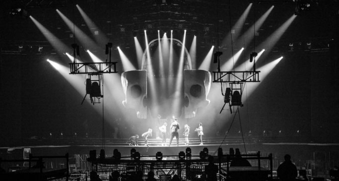

Информационный каталог
Динамические приборы и область их применения
Сабвуфер с RMS мощностью 1000W и пиковой мощностью 4000W.
Проверенный во многих туровых комплектах динамик DL18MT отличается завидной работоспособностью и обеспечивает солидный запас низких частот. Расширенный фазоинвертер в центре кабинета позволяет двум динамикам показать все свои лучшие качества.
